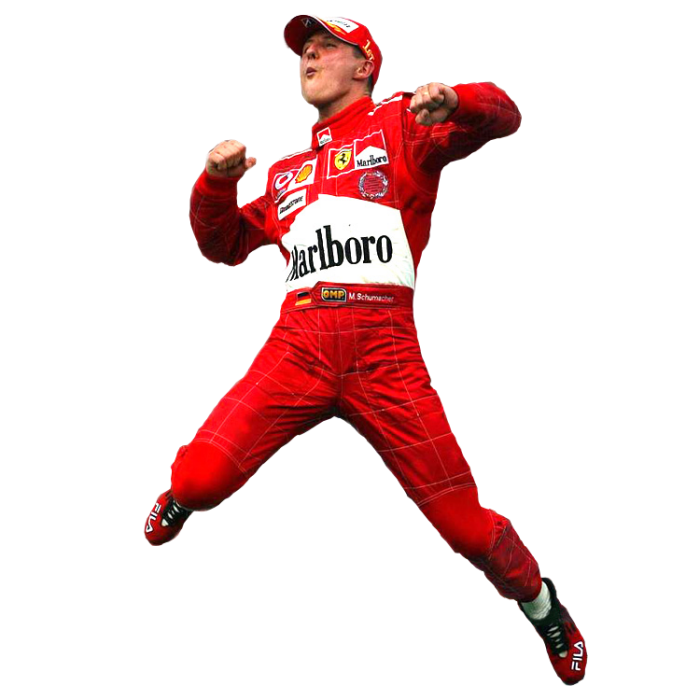
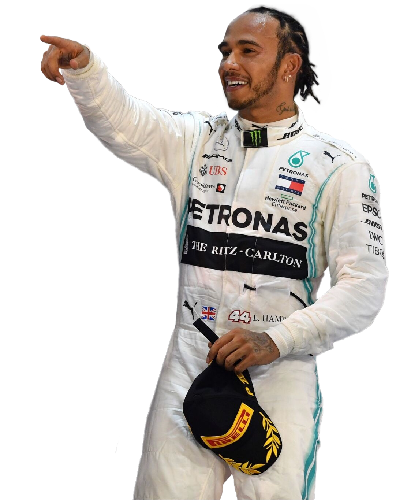
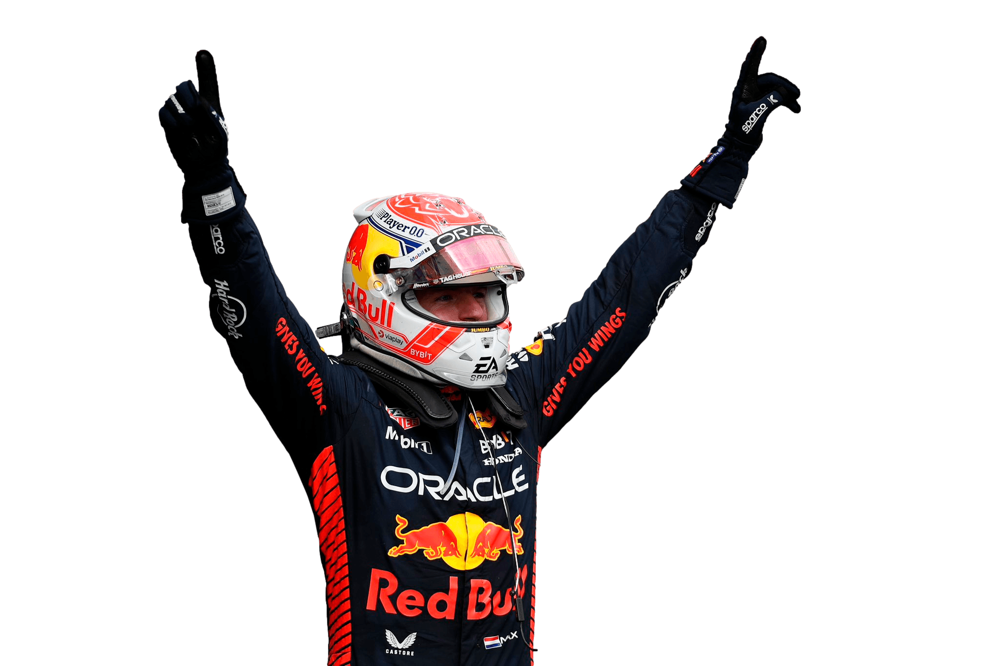

Analyse de la frontière la plus floue du sport moderne.



PILOTEZ POUR DÉCOUVRIR
En F1, deux équipiers partagent le même châssis, le même moteur, la même stratégie. Si leurs résultats diffèrent — c'est le pilote. Chez Red Bull, l'écart moyen entre équipiers est de +4,3 pts/course. Et 8 champions du monde sur 9 ont systématiquement dominé leur coéquipier.
Chaque rayon = une équipe. Gros point = le dominant, rouge = le battu. Utilisez les boutons en haut pour changer d'année.
Top 15 des écarts 2000–2024. Verstappen–Pérez : +12,3 pts/course. Vettel–Webber : +10,4 pts/course. Même voiture.
Chaque point = une saison. X = force de l'équipe. Y = part du pilote au-dessus de son équipier.
En haut à droite : bonne voiture et pilote dominant. Hamilton 2020, Verstappen 2023, Schumacher 2002.
En haut à gauche : petite voiture, grand pilote. Alonso 2012 chez Ferrari. Un résultat impossible… sur le papier.
Peu importe la voiture, Alonso est presque toujours au-dessus. Ferrari, McLaren-Honda, Alpine. Le même résultat.
Le graphique est libre. Zoomez, filtrez, cliquez sur un point pour comparer deux équipiers. Chaque point = une saison.
Chaque ligne = un pilote. L'axe Y = son écart à son coéquipier, saison par saison. Au-dessus de zéro : il domine. Les tirets verticaux : changements d'équipe.
Choisis une voiture et un pilote. On simule ton score contre le champion réel de cette saison.
Ni l'un sans l'autre.
236 duels analysés · 2000–2024 · données FIA
saisons où il domine son coéquipier — peu importe la voiture.
d'écart sur Pérez. La même voiture. Sans équivalent depuis 25 ans.
de plus après son transfert Williams → Mercedes. Même pilote, autre machine.
La voiture fixe le plafond.
Le pilote détermine jusqu'où tu t'en approches.